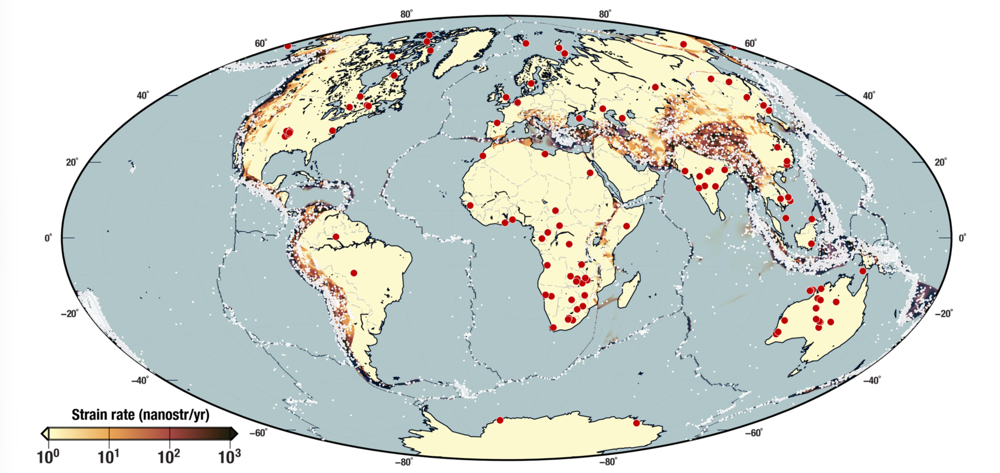

Dynamics of seismicity in stable continental interiors
Collaborators: Romain Jolivet (ENS), Éric Beaucé (LDEO), Nicolas Brantut (GFZ)

While most earthquakes occur at tectonic plate boundaries, the stable interior of tectonic plates still produces seismicity, in the absence of measurable strain accumulation. In other words, those earthquakes occur in the absence of active tectonic loading.
We work under the hypothesis that no strain is accumulating in continental interiors, and that seismicity is driven by a sort of brittle creep on the continental scale. In this framework, (i) static, fossilized tectonic stresses, (ii) transient stress perturbations and (iii) stress transfers within an earthquake sequence are the only drivers of seismicity.
Drawing from inspiration from the study of creep phenomena in granular physics (e.g. Deshpande et al., 2021), we investigate the underlying physics of this process and its role in shaping seismicity patters and its implications for seismic hazard in stable continental interiors.